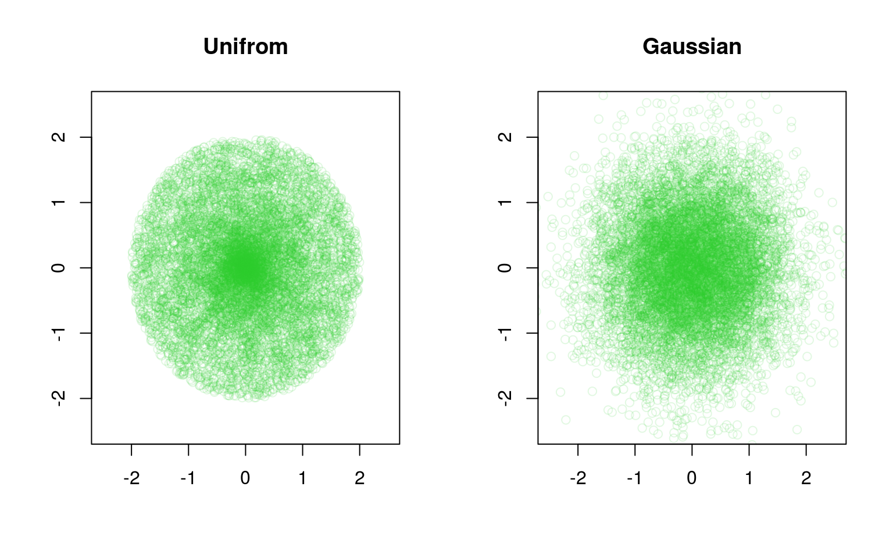
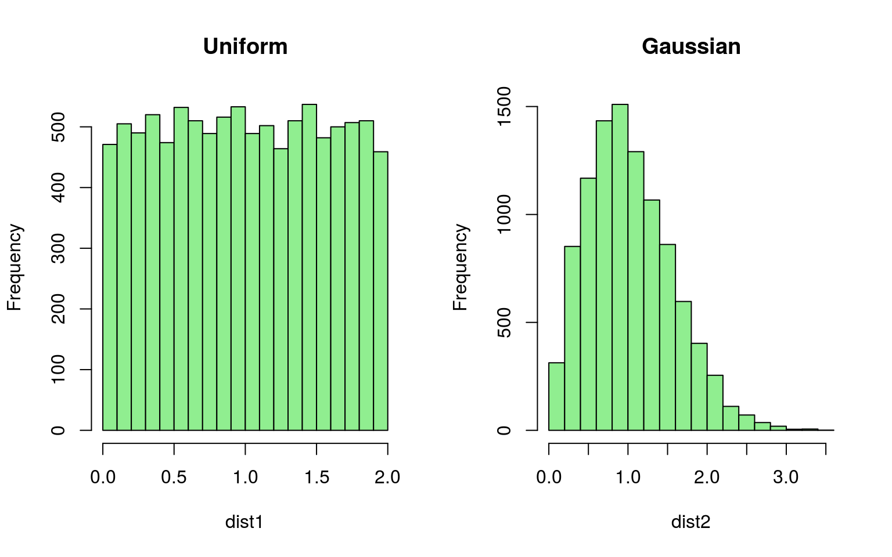
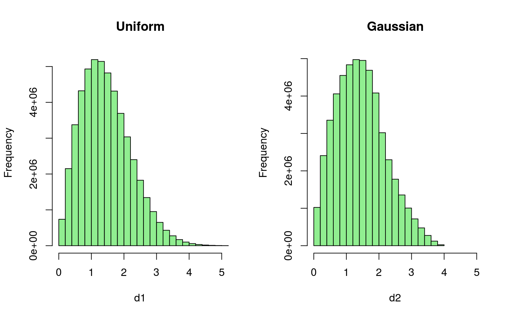

In this vignette we show the use of the function geomasking and we compare the effect of two different displacement methods on the distance of some simulated points. To illustrate this I am using a simulated dataset with 10.000 points, all located at latitude 0 and longitude 0.
This method is currenty used by the Demographic and Health Surveys project to protect the identity of survey respondents. GPS coordinates are displaced according to the “random direction, random distance” method following these steps:
In this case we displace the coordinates adding to them a gaussian error with mean 0 and variance \(\delta^2\).
We set a maximum displacement distance of 2 and we set the standard deviation of the gaussian positional error \(\delta = \frac{\text{maximum distance}}{\sqrt{6}}\). This will make the two types of displacement approximately equal. These two values can be defined through the argument delta of the geomasking function. The type of geomasking applied is provided as a character string to the argument displacement.
n <- 10000
max_dist <- 2
delta <- max_dist/sqrt(6)
# Generate the original points
true_locations <- matrix(0, nrow = n, ncol = 2)
# DHS displacement (Uniform geomasking)
unif_locs <- geomasking(locations = true_locations, displacement = "uniform", delta = max_dist)
# Gaussian geomasking
gauss_locs <- geomasking(locations = true_locations, displacement = "gaussian", delta = delta)
# Plot the displaced locations
par(mfrow = c(1, 2))
plot(unif_locs, col = rgb(50, 205, 50, alpha = 35, maxColorValue = 255), xlim = c(-2.5, 2.5), ylim = c(-2.5, 2.5), xlab = "", ylab = "", main = "Unifrom")
plot(gauss_locs, col = rgb(50, 205, 50, alpha = 35, maxColorValue = 255), xlim = c(-2.5, 2.5), ylim = c(-2.5, 2.5), xlab = "", ylab = "", main = "Gaussian")
# Compare displaced distances
dist1 <- sqrt(unif_locs[, 1]^2 + unif_locs[, 2]^2)
dist2 <- sqrt(gauss_locs[, 1]^2 + gauss_locs[, 2]^2)
par(mfrow = c(1, 2))
hist(dist1, col = "lightgreen", main = "Uniform")
hist(dist2, col = "lightgreen", main = "Gaussian")
# Compare within distances of displaced points
d1 <- dist(gauss_locs)
d2 <- dist(unif_locs)
hist(d1, col = "lightgreen", xlim = c(0, 5), main = "Uniform")
hist(d2, col = "lightgreen", xlim = c(0, 5), main = "Gaussian")